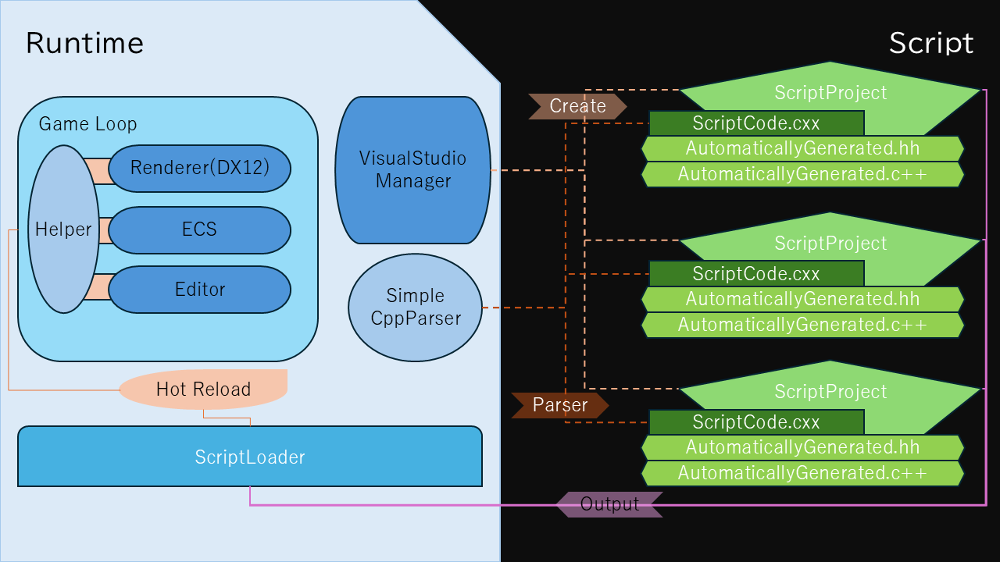

Architecture
Hybrid ECSの内部構造とデータフロー
Architecture Diagram

- Entity： IDベースのオブジェクト。Component群の集合体。
- Component： データ構造＋補助メソッド（Getter / Setter / Editor描画 / Serialize / Deserialize）。
- System： Component群に対して一括で処理を行うロジック層。
- Module： ComponentとSystemを合わせた単位。機能単位の基本構成要素。
- Engine Core： RuntimeおよびEditorを統括する中心層。DLLやRendererも統合。
Renderer Layer
DirectX12
DirectX12(DX12)を利用したレンダラーを使用しています。
コマンドリスト型の描画命令を行うことでの高速化を行います。
また、Pipeline State Object(PSO)をキャッシュ化しPSOの都度作成するコストをカットしています。
std::string Pipeline::GeneratePSOKey(BlendMode blendMode, CullMode cullMode, PrimitiveTopologyType topologyType,
bool isDepth, bool isDepthMask, int rtvCount, bool isWireFrame) const
{
return std::to_string(static_cast<int>(blendMode)) + "_" +
std::to_string(static_cast<int>(cullMode)) + "_" +
std::to_string(static_cast<int>(topologyType)) + "_" +
(isDepth ? "1" : "0") + "_" +
(isDepthMask ? "1" : "0") + "_" +
std::to_string(rtvCount) + "_" +
(isWireFrame ? "1" : "0");
}
さらに、Vertex Shader(VS)に渡す頂点バッファをStruct of Arrays(SoA)にすることでキャッシュライン上を同義の情報で満たすため、 プリフェッチによるキャッシュヒット率の向上を見込めます。
for (auto&& layout : m_semanticsLayout)
{
switch (layout)
{
case InputLayout::POSITION:
CreateVertexBuffer(vertices.Position, sizeof(Math::Vector3),
ansi_to_wide(_CRT_STRINGIZE_(vertices.Position)), &m_pPosBuffer, m_posView, m_views, vertexCount);
break;
case InputLayout::TEXCOORD:
CreateVertexBuffer(vertices.UV, sizeof(Math::Vector2),
ansi_to_wide(_CRT_STRINGIZE_(vertices.UV)), &m_pUVBuffer, m_UVView, m_views, vertexCount);
break;
case InputLayout::NORMAL:
CreateVertexBuffer(vertices.Normal, sizeof(Math::Vector3),
ansi_to_wide(_CRT_STRINGIZE_(vertices.Normal)), &m_pNorBuffer, m_norView, m_views, vertexCount);
break;
...
}
}
VSのhlslもしくはcsoを解析したときに引数のレイアウト情報を抽出するため、引数が変動してもRuntimeを変更する必要はなく柔軟に対応できます。
Hot Reload Flow
1. Create Script Project
ImGuiで作成されたScriptWindowで Script名を入力し作成します。 初期に作成されるのはScript名の.vcxprojと.filtersファイル、ユーザが直接コードを書くコンパイル対象外の.cxxファイル とプリコンパイルヘッダ作成用の.ccファイルです。
2. Parse
コンパイル対象外の.cxxは個別のディレクトリに配置されており、ファイルの変更を監視しています。 変更があれば、.cxxファイルを解析します。 解析内容は関数の定義と内容の抽出と構造体の定義とメンバの抽出を行います。 この内容をもとにコンパイル対象の.c++と.hhを作成します。 .c++はDLLのエクスポート関数を作成し、実際に動くようにランタイムのレジスターに登録します。 .hhは各Script間でリフレクションを行うための外部に対して構造体定義の公開用ヘッダです。
3. Output DLL
解析後、生成された.c++と.hhを.vcxprojと.filtersに追加します。 追加した後に、MSBuildコマンドを使用して.vcxprojをビルドします。 指定されたディレクトリに.dllと.pdbを出力します。
4. Hot Reload DLL
.pdbファイルを監視して変更があればテンプディレクトリを作成し、.dllをコピーします。 その後既存でDLLがあるのであればアンロードし、新しい.dllをロードします。 最後にテンプディレクトリを削除します。
Interface Boundaries
境界越境制約(Interface Boundaries)は、C ABI互換性を持たせまた、例外を越境させないことを約束します。
C ABI互換性を持たせるためにPOD化という選択肢がありますが、POD化には多くの制約がありこれを改善するため共通のヘッダに構造体を宣言し、インスタンスのポインタでやり取りを行っています。
そのため.cxxファイルは抽象化したテンプレートコードであり、実際に動く.c++ファイルはこの制約を厳守した形にしています。